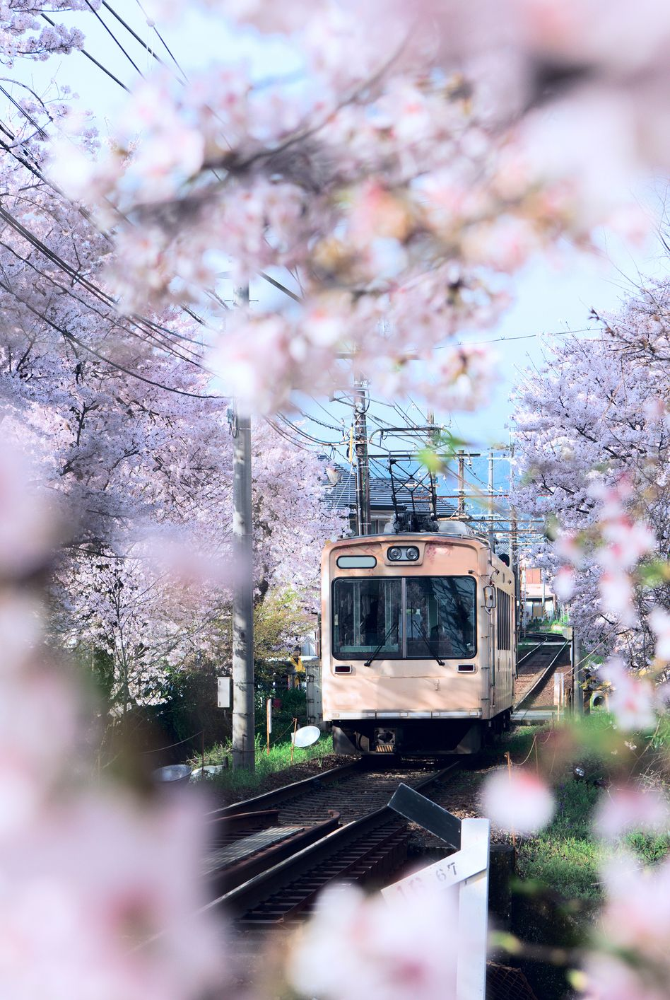

-

Cappadocia, Turkey
Even without all the candy-colored hot air balloons dotting the skyline, Cappadocia is a beautiful sight to see. Those ancient rock formations used to be dwellings, which makes it a particularly great place for history buffs to explore.Lying in south central Turkey, the moonscaped region of Cappadocia, southeast of Ankara, is most famous for unique geological features called fairy chimneys.
-
Mostar, Bosnia
It only takes a quick glance to see that Mostar, Bosnia is one of the most beautiful cities in the world. But beauty aside, it also has a rich—albeit painful—history. And while it looks like it dates back to the medieval ages, it was actually only erected in 2004 as a reconstruction of the original, which was 400 years old when it was destroyed in the 1990s during the Croat-Bosniak War.
-
Patagonia, Argentina and Chile
On the Argentine side, you'll find steppes, grasslands, and deserts, while the Chilean side holds glacial fjords and a rainforest. Whether you ski, hike, or just want to behold the incredible beauty, boundless adventure awaits. The five dramatic Patagonian provinces stretch from the ice fields of the Andes mountains to the rugged Atlantic coast, where southern right whales gather to breed.
-

Maui, Hawaii
Can't decide which Hawaiian island to visit? Maui's home to some of the state's most amazing outdoor adventures, such as kayaking past whales in Makena Bay, hiking or biking Haleakala National Park, and of course plenty of water sports like surfing and snorkeling. Maui never loses itself to tourism. Instead, it remains grounded in lush nature, Hawaiian culture, and aloha spirit.
-

Kyoto, Japan
The Daigo-Ji Temple in Kyoto attracts crowds during cherry-blossom season, but the fall foliage provide an equally-stunning backdrop for the complex's historic buildings.
One pagoda dates all the way back to 951.The shrines and temples of Kyoto offer a rare link between modern life in the city and its very ancient past.One pagoda dates all the way back to 951. -
Igazu Falls, Brazil
No wonder this was named one of the new natural seven wonders of the world—Igazu Falls is the world's largest waterfall system, so there's definitely no shortage of views here. This massive forested park, with rare species of birds, pumas, tapirs, monkeys and other wildlife is best known for housing the world's largest and most extraordinary waterfalls - the Iguacu Falls -that extend for miles.
Website Created By Sanika Acharya